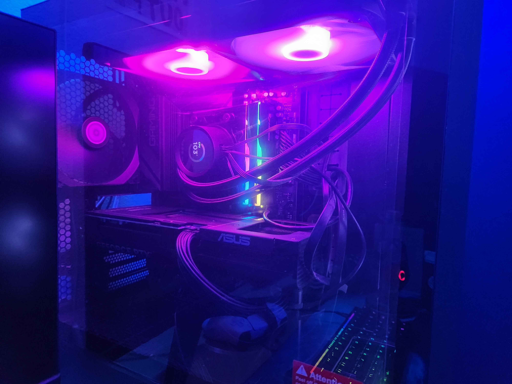
Custom Computer Build
Built a custom desktop PC by selecting compatible components, assembling hardware, installing the OS, and optimizing performance for reliability and efficiency.
Network Administration and Cybersecurity
I am driven by the complex obstacles of modern cybersecurity and networking. I have found the World Wide Web and ethical hacking intriguing ever since I was 10 years old. I have and always am looking for opportunities to further develop my technical knowledge and skills.
View My WorkOrganized, trustworthy junior at Meridian Technical Charter High School (MTCHS) seeking an internship in the network administration and cybersecurity field.
Meridian Technical Charter High School, Meridian, ID
GPA: 3.87
Expected: 2027
Idaho Esports Association
2025
SkillsUSA Vex Robotics
2024 – 2025
Information Systems Support
2024 – 2025
Raspberry Pi
2023 – 2024
Cybersmart Courseware
2023 – 2024
Electronics
2023 – 2024

Built a custom desktop PC by selecting compatible components, assembling hardware, installing the OS, and optimizing performance for reliability and efficiency.
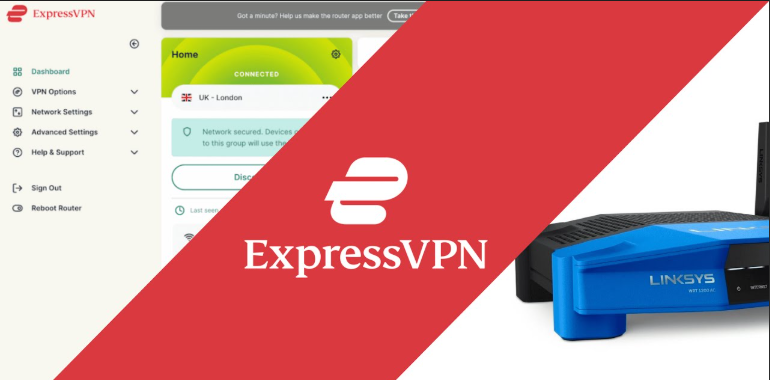
Configured a secure home Wi-Fi network by setting up router-level VPN tunneling and managing network settings.
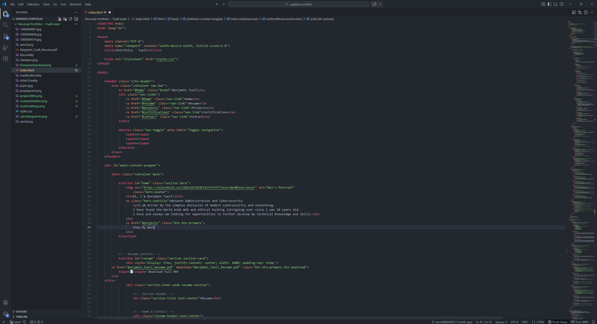
Designed and coded this personal portfolio website in mostly HTML, heavily utilizing AI, to create a clean layout to showcase my projects and skills.
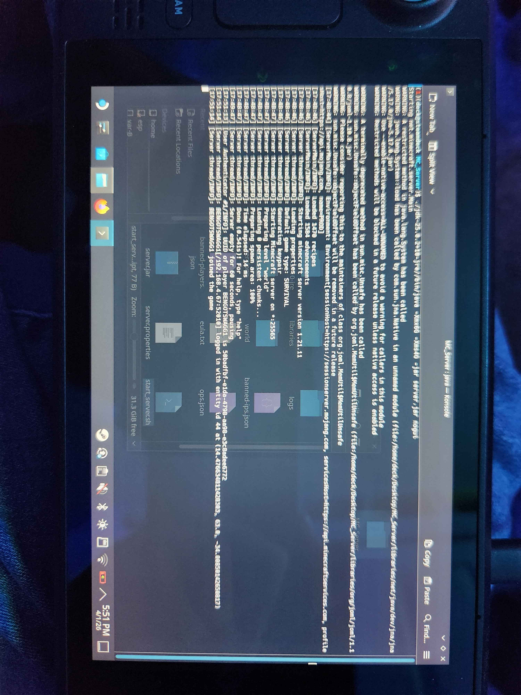
Leveraged SteamOS(Linux) to host a 1.21.11 modded Minecraft server. Installed custom modpacks, optimized Java runtime arguments, and configured network ports.
Successfully installed and optimized Kubuntu, Kali, and Mint Linux distributions. Focused on partitioning, repository management, and environment-specific hardening for a versatile development and testing workstation.
Installed a custom, minimalist Arch Linux environment, through performing a manual, command-line-driven installation without using automated scripts such as archinstalll.
Installed and configured the source-based manual Linux distribution Gentoo, focusing on USE flags, window managements, kernel configuration, and poratage package management.

Implemented and configured a prosumer-grade SOHO network architecture designed for security monitoring and traffic segementation, utilizing a Ubiquiti UniFi stack, alongside a Raspberry Pi controller.
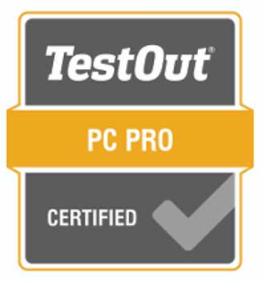
Microsoft Certification Service
View Information
Microsoft Certification Service
View InformationMicrosoft Certification Service
View InformationMicrosoft Certification Service
View InformationIf you have any recommendations, comments, questions, etc, you can fill out this form and I will get back to you as soon as I can.
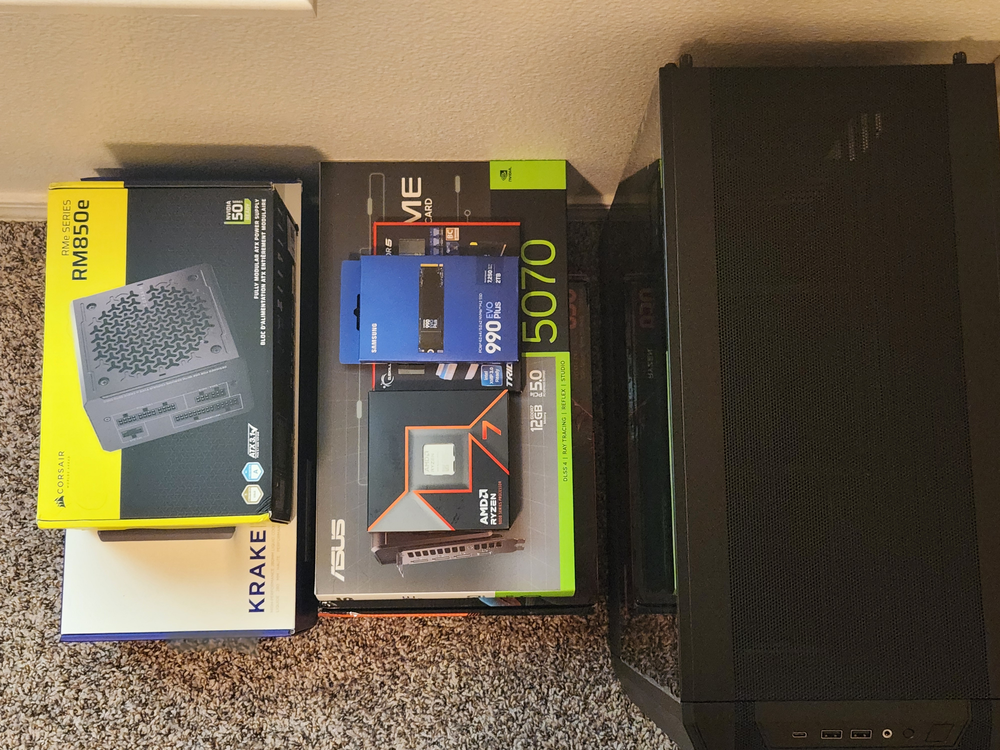
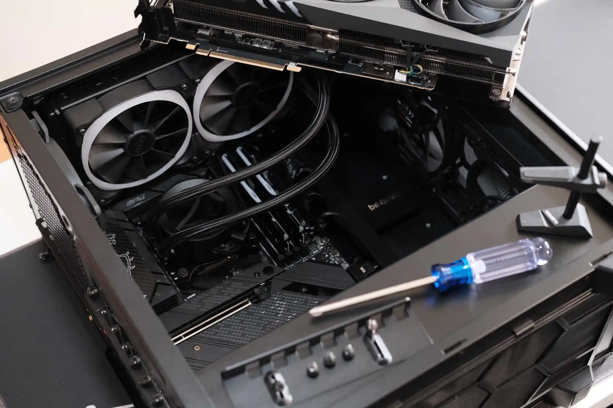
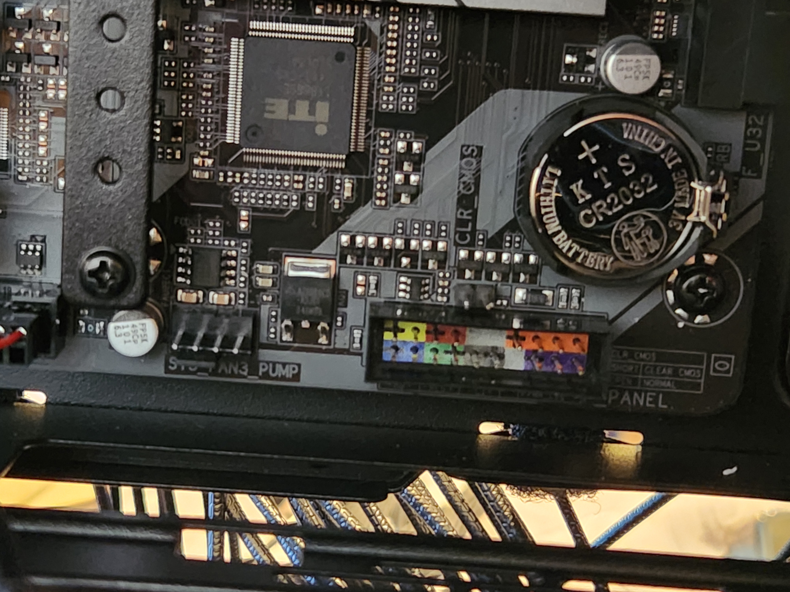
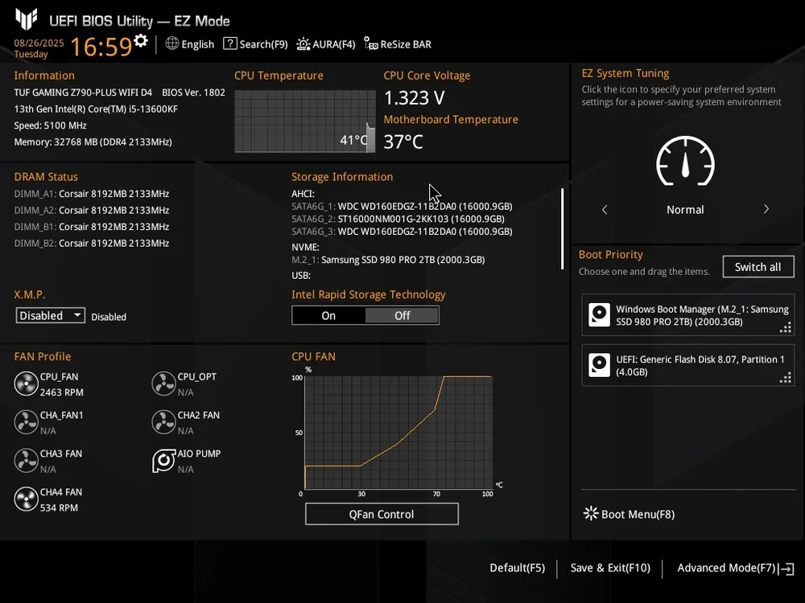
This project is focused on the planning and the building of my own custom computer from the ground up. I started by putting all of my desired components into PCPartPicker, then I ordered the parts, all of which were on Amazon. Once all of the parts arrived, I assembled the system, installed Windows 11, and configured the UEFI settings for optimal performance.
The first challenge I ran into was before I even started building. The motherboard I ordered was damaged, so I had to return it and wait for a replacement. The second challenge I had was with the case's front panel connector. The case + motherboards' manuals were different in their instructions, but found out that I was installing it into the wrong port. I also ran into issues with the cables, since I did not know where certain cables went, primarily due to inexperience. It didn't help that the manual that came with the motherboard didn't label the cables, so I had to look up the online version to find where they went. The final issue I had during this journey was with updating the UEFI on the system. Since the motherboard's isntructions on how to do this were vague, I ended up doing it incorrectly. I had to re-flash it so that it could work.
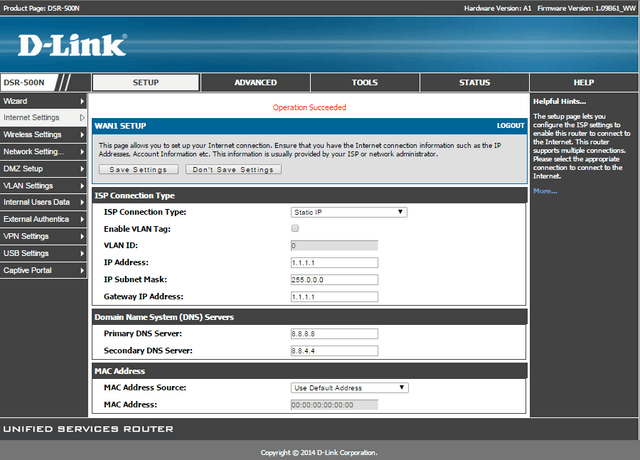
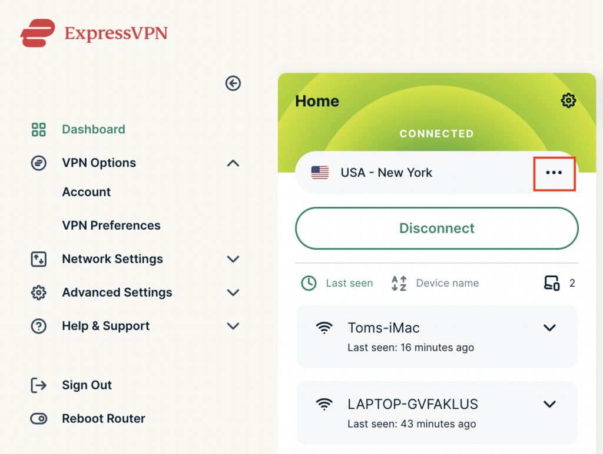
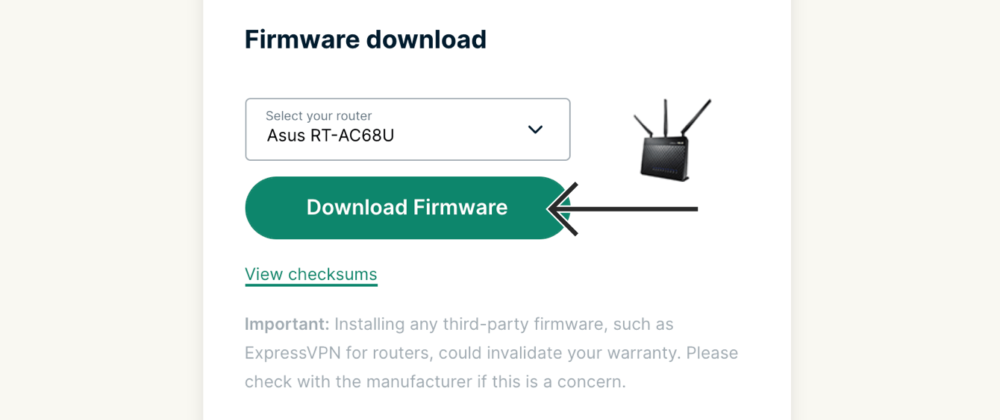
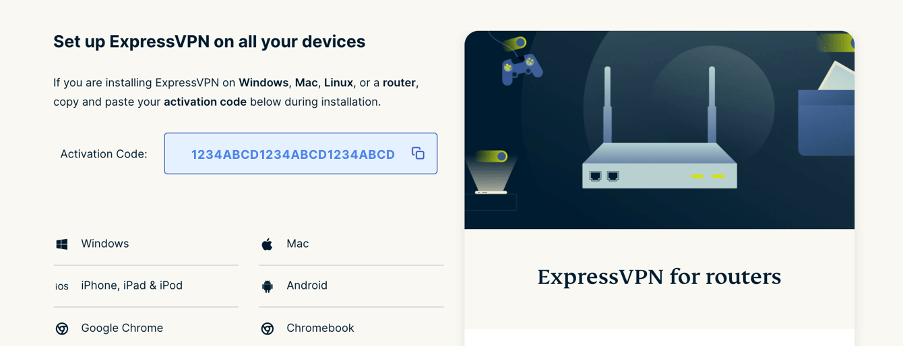
This project involved implementing a Virtual Private Network, or VPN, directly on a home router rather than on individual devices, such as a phone or a laptop. Doing this allowes every device connected onto a Wi-Fi network, which includes devices that don't normally support VPN software, to be automatically protected.
The first problem that I came across during this process was during the installation of the custom firmware. I tried to use a incompatible file version, which caused the router to brick. I had to preform a Trivial File Transfer Protocol, or TFTP recovery. It involved settinga static IP on a computer, connecting it via Ethernet, and pushing the factory frmware back onto the router. Another problem I experienced was due to the fact that my internet connection was a modem/router combination. When I connected my VPN-enabled router to the modem, it caused router port configuration problems. In order to fix it, I had to configure the ISP's modem to Bridge Mode, disabling the ISP's routing and firewall features. Finally, I was facing issues with the actual hardware with the router aswell, as my router's CPU was maxed out, causing high latency and low speeds. I found out this was caused by using OpenVPN, so I switched to WireGuard. I also enabled AES-NI, and overclocked the router.
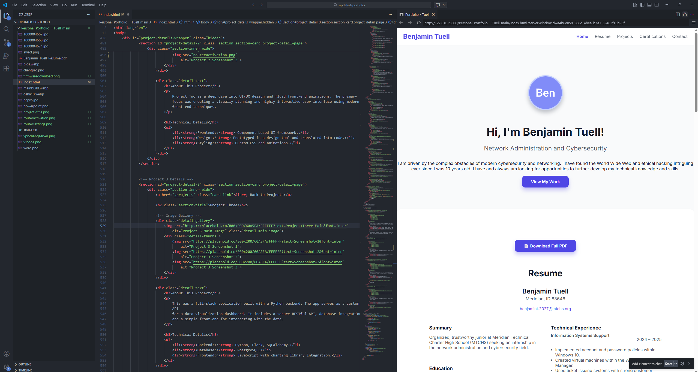
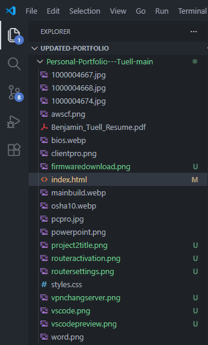
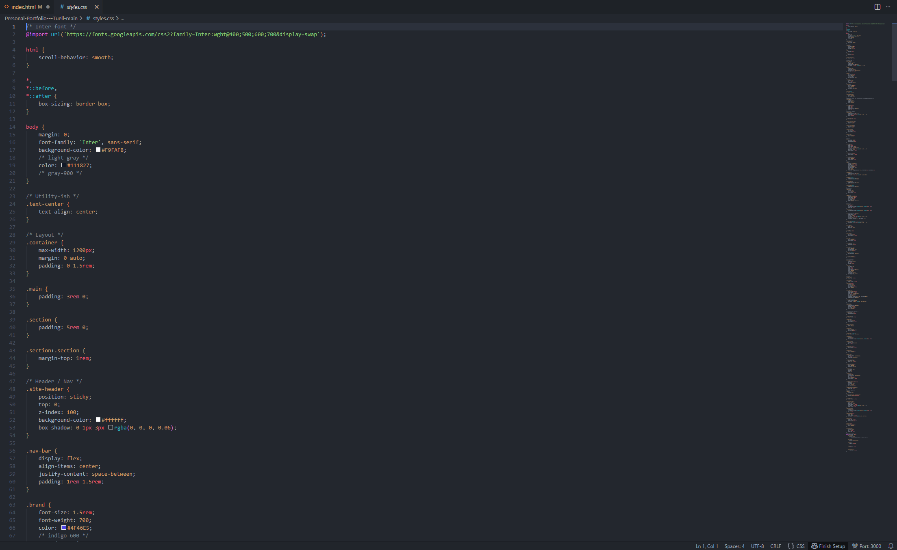
This project involved the development of this HTML personal portfolio website. More specifically, front-web development and AI-assisted coding workflows. This project involves three main languages: HTML, CSS, and JavaScript. This also involved Responsive Web Design, or RWD, to ensure that the interface is funtional and aesthetically consistent across all devices. Through leveraging CSS Flexbox-Grid for the layout and semantic HTML5 for accessibility, it achieves a clean and modern architecture.
The first issue I had with this project was early on, when I tried to configure github to work in VSCode. I problems with installing the extension, and linking my Github account. I had to install Git, and go into the git configuration file to add my email and username. Another issue I faced during this project was how the clean layout appeared perfect in Chrome, but not in FireFox. I had to implement CSS Autoprefixing and Reset Styles, to establish a consistent baseline across all browsers. Similar to the first one, another issue I had was with upbloading my site using Github's Pages. The link it gave me led to a 404 error, saying my index.html file was not linked properly. The soltution was in the URL, where I simply just changed it to link directly to the .html file, instead of the folder it was in.
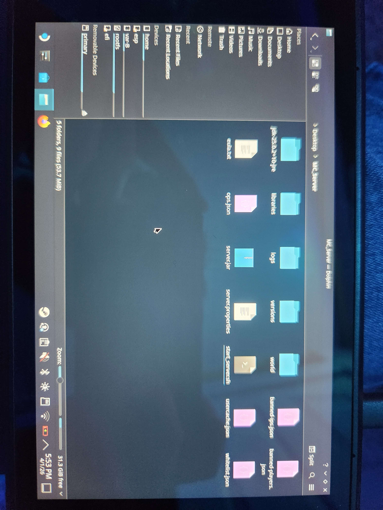
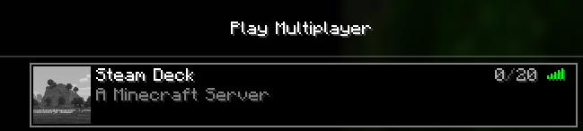
This project involved the Linux systems administration and game server virtuatlization to turn a SteamDeck console into a host for a modded Minecraft environment. This messed with java runtime scripts and environments, the linux file system, and the configuration of network ports to allow people from anywhere to join the server.
One of the first issues I ran into were system read-only errors, which was caused by SteamOS Immutability. My solution was to use the command steam-os-readonly disable, and to use flatpal-based JRE installations to bypass root restrictions. Another issue I had was with high latency caused by resource contention. My fix was tweaking with the JVM arguments to prioritize CPU threads for the server process over background Steam services. Lastly, when hosting the server, other people would have connectivity issues, which were caused by CGNAT and firewall blocks. I had to verify port 25565 was open using an external port checker, and I had to confirm the router's NAT settings.
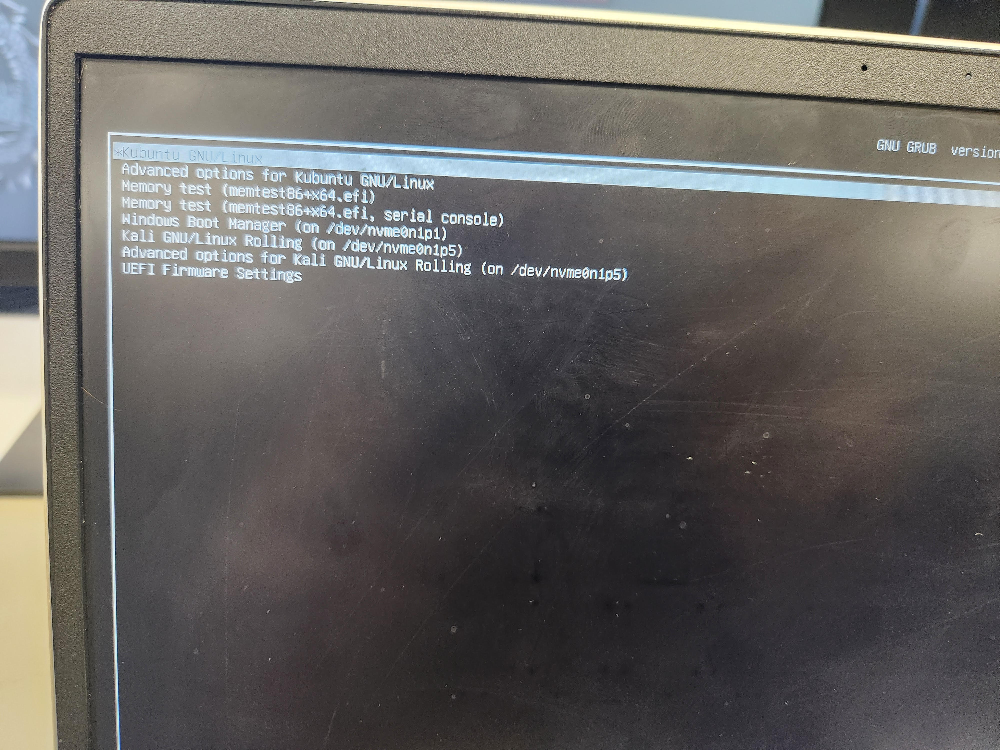
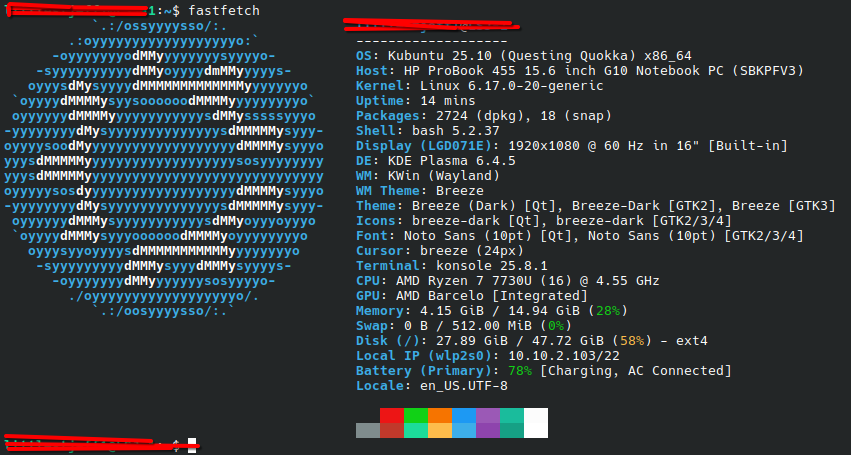
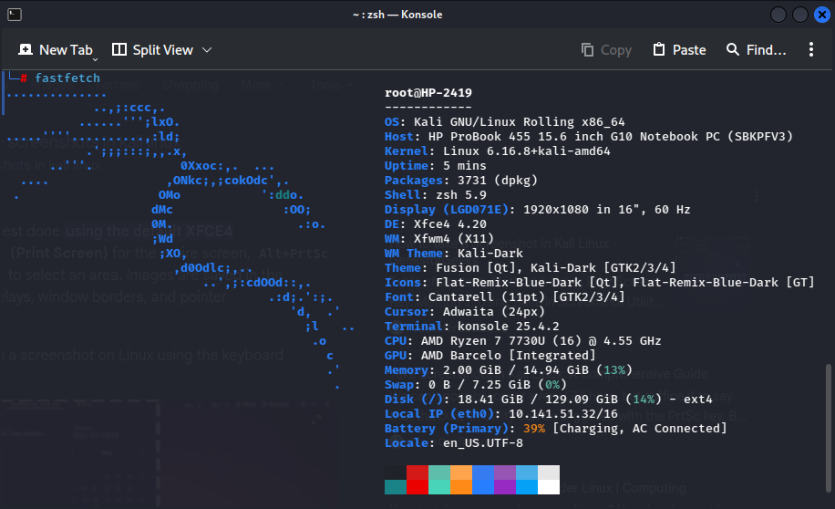
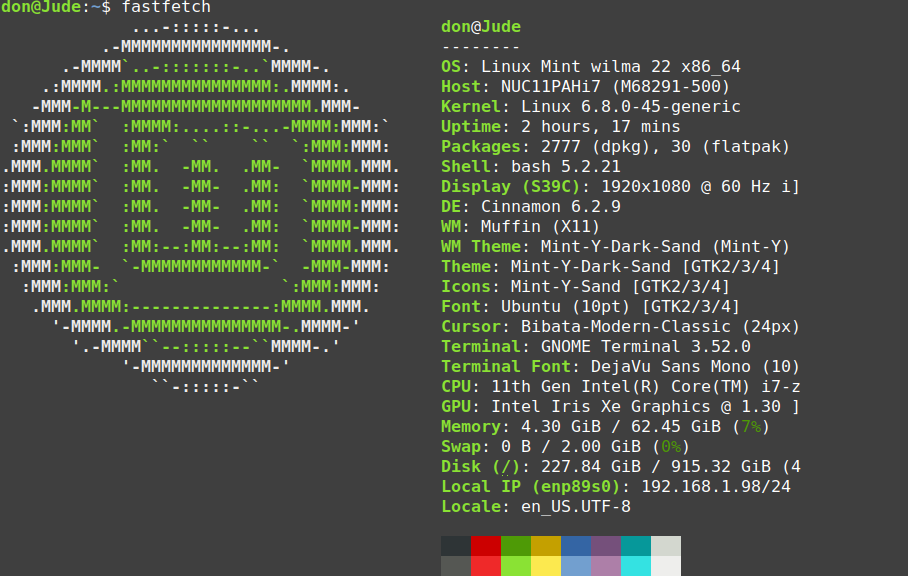
This project involved quad-booting Windows, Kubuntu, Kali, and Mint systems all on the same hard drive for security testing, development, and overall daily use. This involved partitioning the same drive multiple times, mounting ISO files onto a USB drive with Rufus, and BIOS configuration. This also involved managing the GUID Partition Table, or GPT architecture to ensure that each OS has a dedicated primary parition, while sharing a unified EFI System Partition, or ESP.
My first problem arose when I installed the second operating system, which replaced the GRUB loader of Kubuntu with Kali's, so I couldn't boot into Kubuntu. In order to fix it, I had to enable os-prober, which automatically detects other operating systems to ensure it doesn't overwrite anything related to other OS's. My second problem was after I downloaded all the Linux operating systems, which affected my clock in Windows to be off by several hours. I had to force Linux to use Local Time, which I did through timedatectl set-local-rtc 1 --adjust-system-clock. Finally, I had an issue with Kali and how it was missing Wi-Fi capabilities, which wasn't the case for Kubuntu and Mint, as Kali is a security tool. I had to do a manual firmware injection to ensure Kali has the proper firmware blobs it needed for my specific Wi-Fi card.
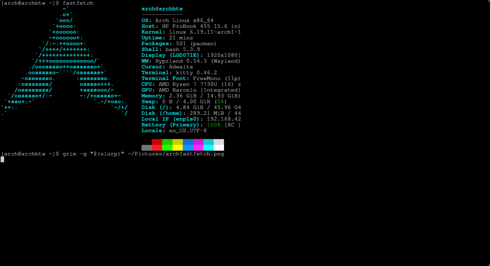
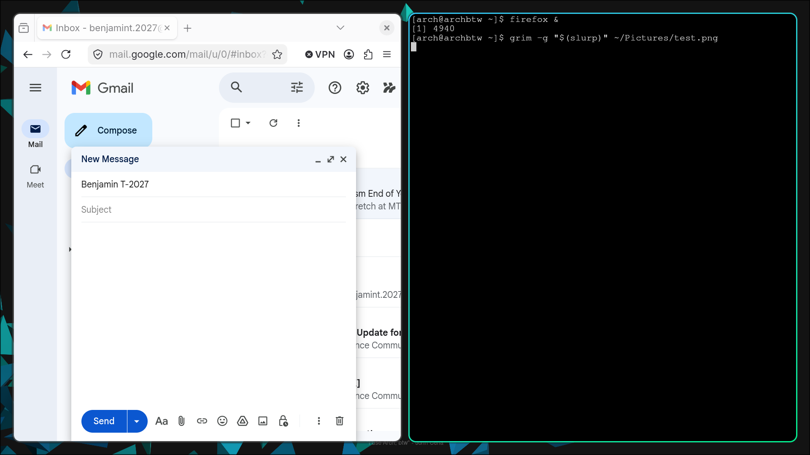
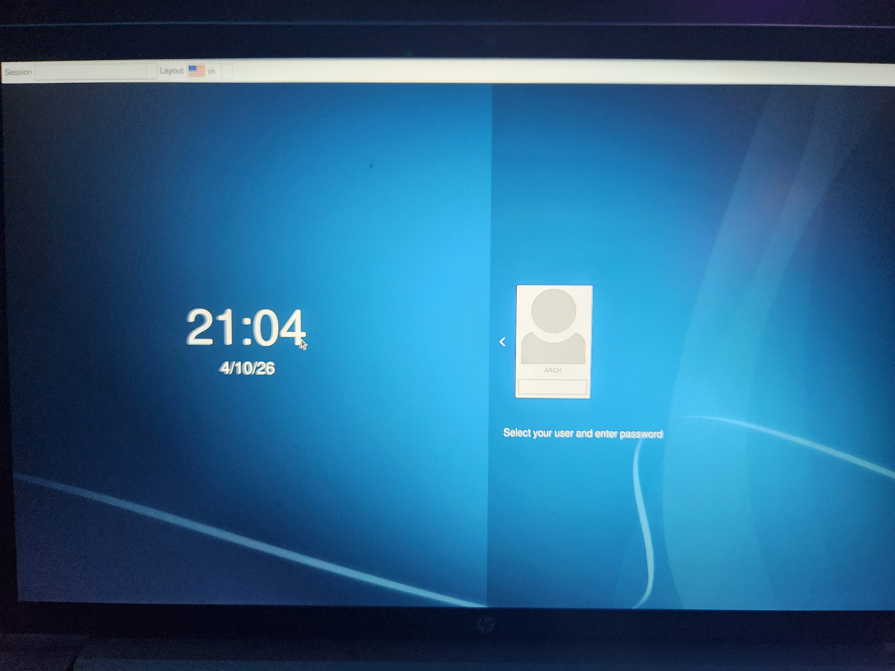
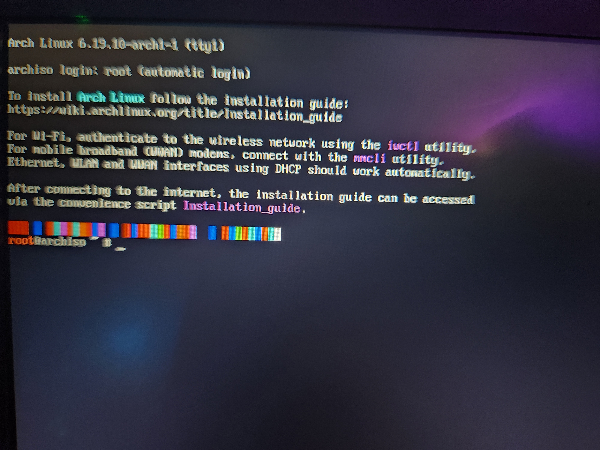
This project involved the manual installation of Arch Linux, through the usage of the pacman package manager, downloading of custom greeters + window managers, and manual kernel configuration. Unlike other operating systems, Arch has you manually define each and every single component as you see fit, from the partition table, to the desktop compositor.
An issue I ran into was not having internet after restarting my computer once the installation was complete, caused by not having services enabled. In order to fix it, I had to download NetworkManager, and ensure it was enabled on startup in the chroot environment. Another issue I had was with booting into Hyprland, caused by not having all of the dependencies needed. I had to download the remaining dependencies, and ensure that hyprland detected the dependencies it needed. Finally, I had an isuse with constant screen tearing, caused by missing drivers. I had to manually identify the hardware, and install the correct drivers via pacman.
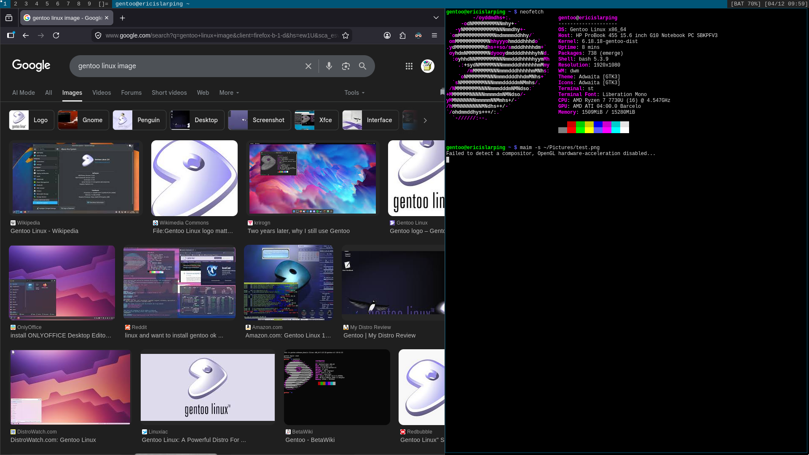
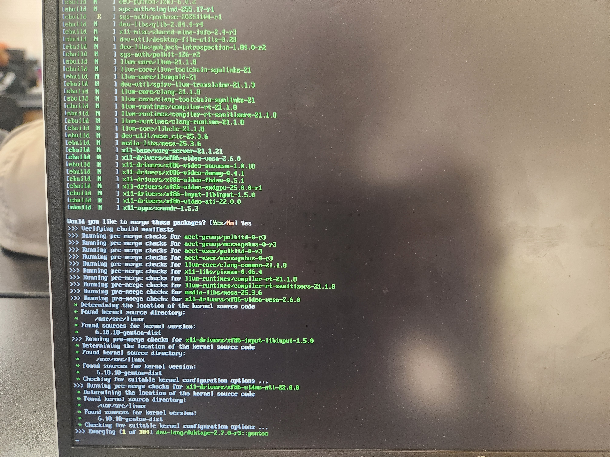
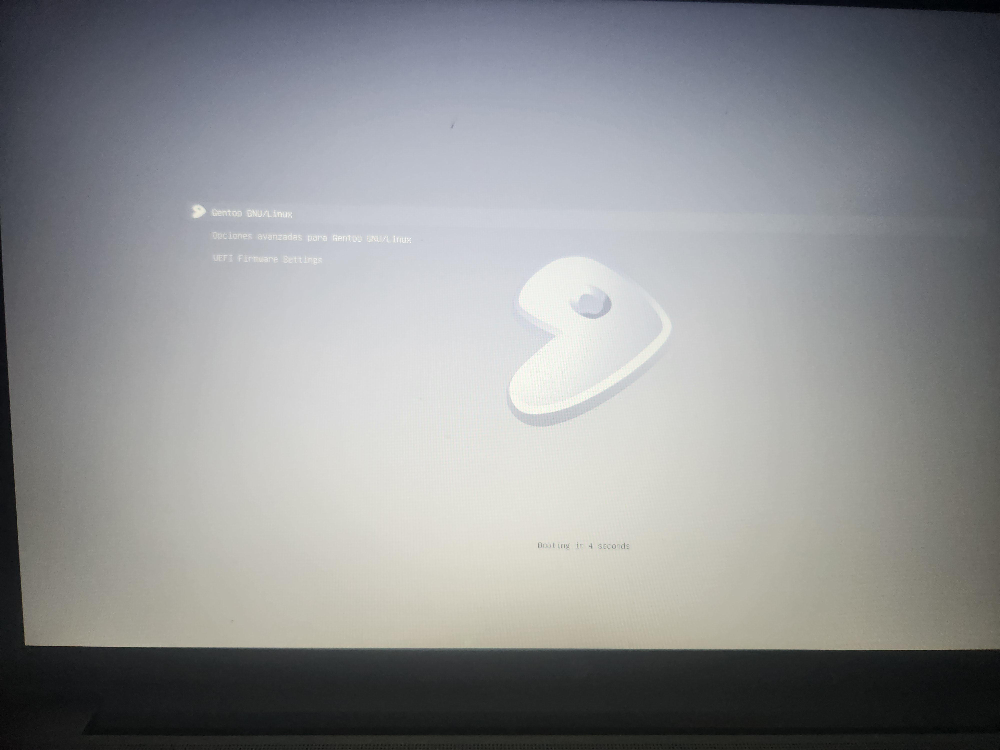
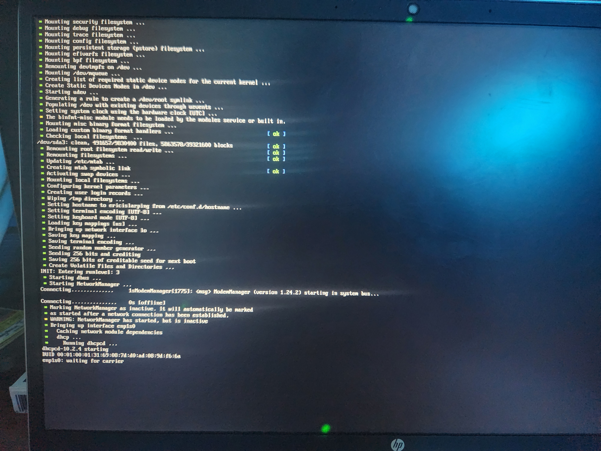
This project involved the manual compilation of a Linux kernel, and the granular configuration of system-wide flags to optmize software for specific hardware architecture. It also involved the step-by-step assembly of a root filesystem, management of USE flags that allow maximum customization, and the navigation of technical documentation to troubleshoot bootloader configuration.
One of the very first issues I ran into was with configuring the kernel, as I had kept misplacing it between /boot and /boot/efi, as the boot partition I set up had multiple copies of /boot. I ended up unmounting the /boot files, and installing the kernel into /boot/efi. Another issue I had was with with the GRUB bootloader, and how it wasn't giving me the option to boot into gentoo, and only showing me my UEFI settings. In order to fix it, I had to regenerate the kernel configuration file, and re-mount grub to the boot partition, as it was accidentally saved to my root folder. Finally, I had issues with installing the window manager, as when I ran the install command for Hyprland, it kept saying I was missing dependencies. To fix this, I had to manually install every single dependency, and deal with unmasking them aswell. The two dependencies that I had the most trouble with were aquamarine and LibHyprUtils.
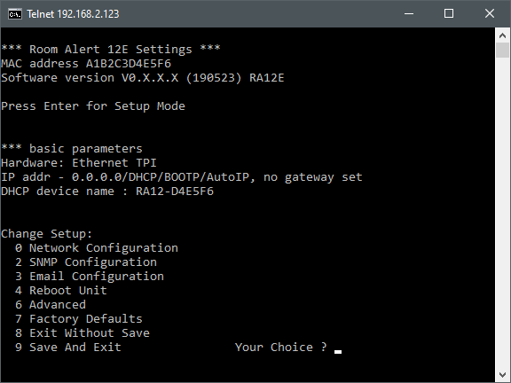
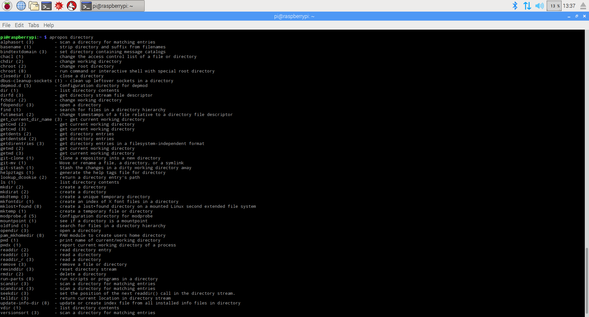
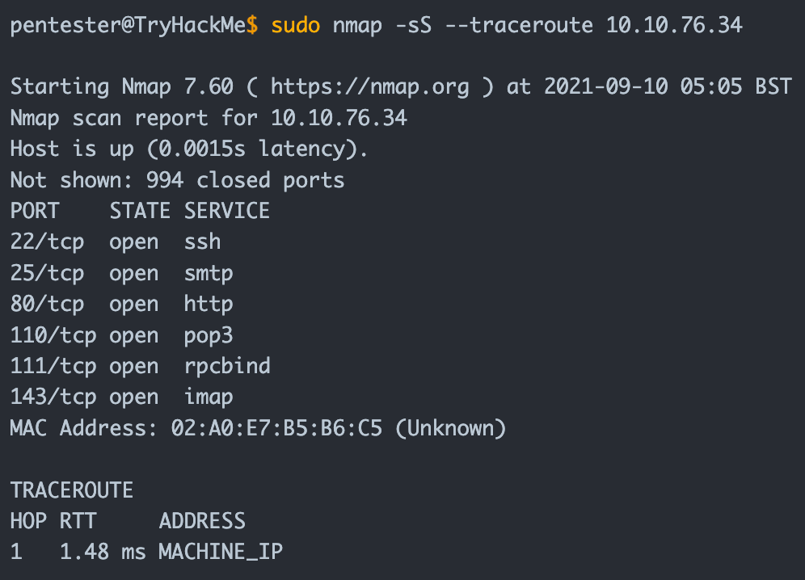
This project involved the architectural design of a segmented SOHO network, and the technical integration of a dedicated SIEM and IDS/IPS attack stack in order to simulate enterprise-level security monitoring. Through leveraging a Ubiquiti UniFi hardware suite alongside a Raspeberry Pi-based controller, the deployment isolated critical traffic while providing real-time visibility into potential network threats.
The first issue I came across during this project was after I enabled IDS/IPS, the console was flooded with hundreds of alerts for suspicious traffic. I had to preform signature tuning to analyze repeated alerts and manually disable signatures. Another issue I had was with the fact that heavy logging on a Raspberry Pi lead to high CPU usage and SD card failure. To fix it, I optimized the stack by using Logz.io, to offload the heavy database storage to an external SSD rather than an SD card. Finally, the last issue I had was caused by how HTTPS/TLS web traffic is encrypted, meaning my IDS/IPS couldn't see the actual data packets passing through the UniFI stack. I had to implement Heuristic and behavioral analysis.